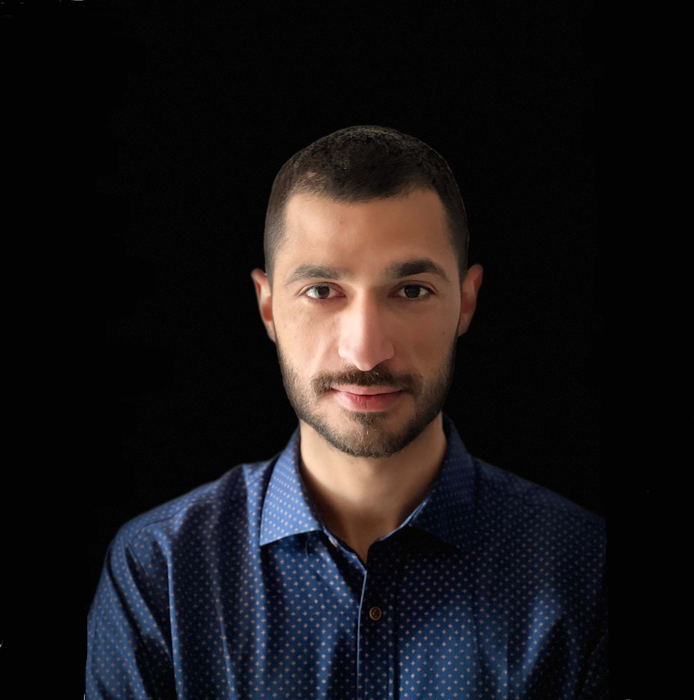

Specializing in autonomous mobile robots, legged locomotion, and state estimation. Bridging the gap between cutting-edge research and practical robotic applications.
View My Work Contact Me
I am a PhD candidate at the Computer Science Department of the University of Crete. My primary research focuses on autonomous mobile robots, with a deep dive into legged locomotion and state estimation. Currently, I am applying my academic research to real-world problems as a Robotics Software Engineer at the Computational Vision and Robotics Laboratory (FORTH). Alongside legged robots, I have extensive hands-on experience with UAVs, robotic arms, and wheeled robotic platforms.
Solving state-of-the-art research problems in robotics. Actively developing for funded research projects, publishing papers, and mentoring undergraduate students in the lab.
Developing medical training simulations for surgical robotic systems in Virtual Reality. Integrating exoskeleton hardware with VR software environments.
Developed software for various robotic platforms including UAVs, robotic arms, humanoids, and industrial robots while contributing to advanced research solutions.
Specialization in Robotics and Computer Vision. Thesis: Contact State Estimation for Legged Robots.
Thesis: Autonomous Robot Navigation with Artificial Potential Fields.